Overview
Purpose
This website is intended to help users discover outdoor activities across Arizona, including hiking trails, scenic viewpoints, and adventure spots. It provides easy-to-navigate information so users can plan trips based on location, difficulty, and activity type.
Audience
We hope to help tourists, local residents, students, and outdoor enthusiasts looking for fun and accessible adventures in Arizona.
Dynamic elements
A search bar will use JavaScript to capture user input and dynamically filter displayed adventure cards based on keywords such as "hiking" or "waterfall".
Filter buttons will use JavaScript event listeners to sort and display activities by type (hiking, sightseeing, camping) and difficulty level (easy, moderate, hard).
Adventure cards will update in real time using JavaScript DOM manipulation without requiring the page to reload.
A favorite button will use JavaScript to store selected adventures in localStorage so users can view them later on the Favorites page.
A "show/hide details" feature will use JavaScript to toggle additional information, improving readability and reducing clutter.
Branding
Website Logo
Style Guide
Color Palette
| Primary | Secondary | Accent 1 | Accent 2 |
|---|---|---|---|
| #C1440E | #2E4057 | #F4A261 | #AABD8C |
Typography
Heading Font: Montserrat
Paragraph Font: Open Sans
Normal paragraph example
Arizona Adventures provides detailed information about outdoor destinations, helping users plan safe and exciting trips across the state.
Colored paragraph example
Arizona Adventures provides detailed information about outdoor destinations, helping users plan safe and exciting trips across the state.
Navigation
Content
Home page

Explore Arizona
Discover breathtaking hikes, scenic views, and unforgettable outdoor adventures across Arizona.
Arizona is home to some of the most stunning landscapes in the United States, from towering red rock formations to vast desert plains and deep canyons. Whether you're an experienced hiker or just looking for a peaceful place to enjoy nature, there’s something here for everyone.
Arizona Adventures helps you easily find and explore the best outdoor destinations across the state.
Featured Adventures
Here are some of the most popular places to explore:
Camelback Mountain
A challenging hike with steep trails and rewarding panoramic views of the Phoenix area.
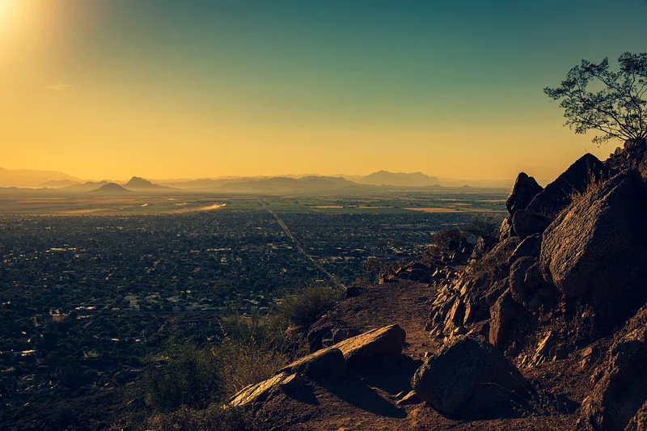
Horseshoe Bend
A stunning viewpoint where the Colorado River curves through towering canyon walls.
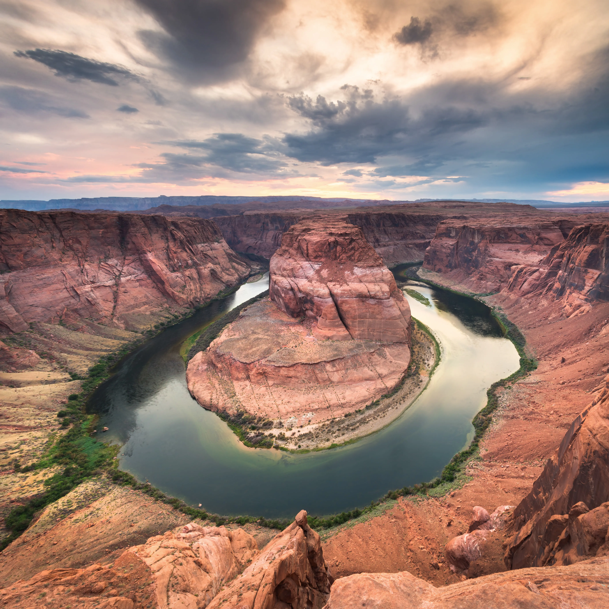
Sedona Red Rocks
Famous for its vibrant red rock formations and scenic hiking trails for all skill levels.
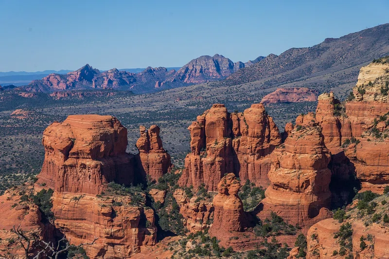
Why Use Arizona Adventures?
- Easily search for outdoor activities
- Filter by difficulty and type
- Discover new places across Arizona
- Save your favorite adventures
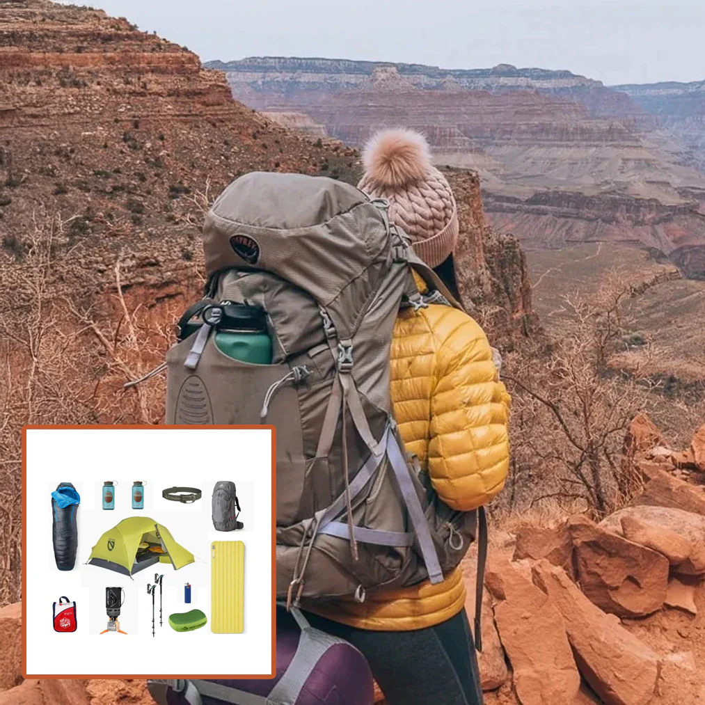
Stay Safe While Exploring
Always bring water, wear proper gear, and check weather conditions before heading out. Arizona's environment can be extreme, so preparation is key to a safe and enjoyable adventure.
Ready to Explore?
Adventures Page

Find your Next Adventure
Explore outdoor destinations across Arizona. Use the search and filters below to find hikes, scenic views, and activities that match your interests and skill level.
Filter Options:
- Activity Type: Hiking, Sightseeing, Camping
- Difficulty: Easy Moderate, Hard
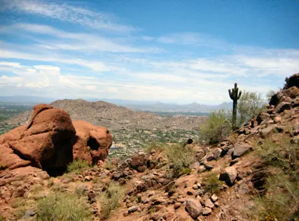
Camelback Mountain
- Type: Hiking
- Difficulty: Hard
- Description: A steep and challenging hike that rewards visitors with incredible panoramic views of the Phoenix skyline. Best suited for experienced hikers.
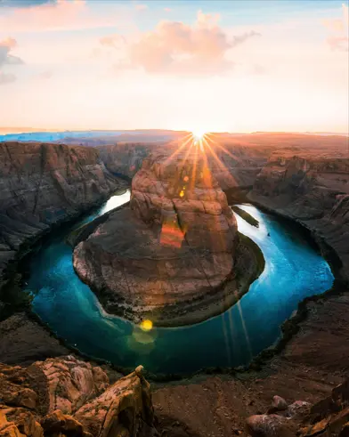
Horseshoe Bend
- Type: Sightseeing
- Difficulty: Easy
- Description: A short walk leads to one of the most photographed views in Arizona, where the Colorado River curves dramatically through the canyon.

Havasu Falls
- Type: Hiking
- Difficulty: Moderate
- Description: A longer hike leads to stunning turquoise waterfalls deep within the canyon. A truly unforgettable destination.

Saguaro National Park
- Type: Hiking/Sightseeing
- Difficulty: Easy-Moderate
- Description: Walk among towering saguaro cacti and enjoy peaceful desert scenery with trails for all experience levels.
Sedona Red Rocks
- Type: Hiking/Sightseeing
- Difficulty: Easy-Moderate
- Description: Famous for its red rock formations and scenic beauty, Sedona offers trails for beginners and experienced hikers alike.
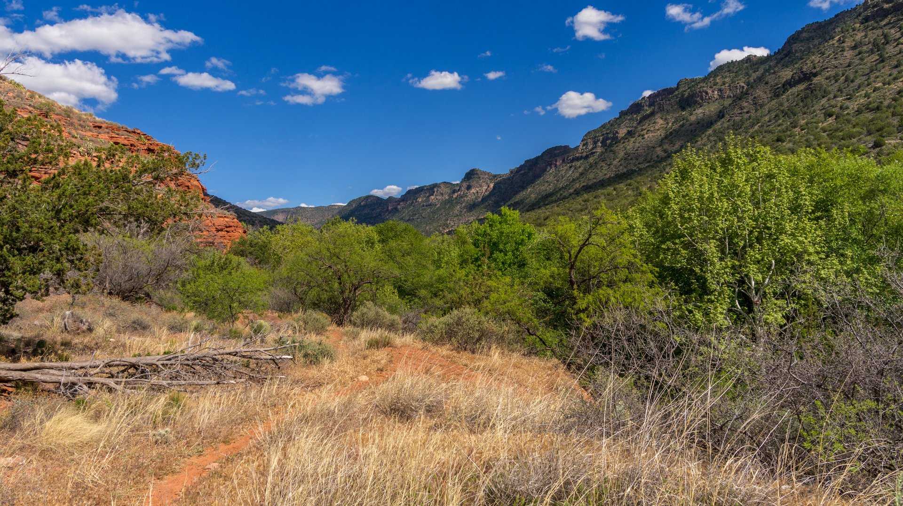
Flagstaff
- Type: Hiking/Camping
- Difficulty: Easy-Moderate
- Description: A cooler mountain escape with forests, trails, and great camping opportunities away from the desert heat.

Grand Canyon National Park
- Type: Sightseeing/Hiking
- Difficulty: Easy-Hard
- Description: One of the most famous natural wonders in the world, offering breathtaking views and unforgettable hiking experiences.
Favorites Page
Your Favorite Adventures
Keep track of the places you want to explore across Arizona. Your saved adventures will appear here so you can easily plan your next trip.
When Favorites Exist:
- Name
- Location
- Type & Difficulty
- Description
- Remove Button (X)
When No Favorites Exist
Empty State Message: "You haven't added any favorites yet."
Feature Description
Users can save adventures by clicking a heart icon in the Adventures page. The Favorites page dynamically loads and displays the saved items.
About Page
About Arizona Adventures
Learn more about the purpose behind this site and the inspiration for exploring the outdoors across Arizona.

About the Website
As a new resident of Arizona and an advocate for adventure, I made Arizona Adventures to help people discover and explore the incredible outdoor destinations found throughout Arizona. From desert trials to mountain forests, the state offers a wide variety of landscapes and activities for all types of adventurers.

Mission Statement
Our mission is to inspire people to explore nature, stay active, and experience the beauty of Arizona in a safe and accessible way.

Who This Site Is For
This site was designed for:
- Beginners looking for easy outdoor activities
- Experienced hikers searching for new challenges
- Tourists visiting Arizona
- Locals wanting to explore new places
No matter your experience level, Arizona Adventures provides something for everyone.
Why This Site Exists
With so many amazing places to visit, it can be overwhelming to decide where to go. Arizona Adventures simplifies this process by organizing outdoor locations into an easy-to-use format with helpful details and filters.

Outdoor Responsibility
Exploring nature comes with responsibility. Visitors should always:
- Respect the environment
- Follow the trail guidelines
- Stay prepared with water and proper gear
- Leave no trace behind
Protecting these natural areas ensures they remain beautiful for generations.
Future Goals
In the future, Arizona Adventures may include:
- Interactive Maps
- User reviews and ratings
- More detailed trail guides
- Expanded locations beyond Arizona
- "Offline Mode" for wifi dead zones
Wireframes
Create two wireframes for your site. One for each page and list them here
Home
By clicking the heart certain adventures, locations, and trails can be saved to the favorites page.
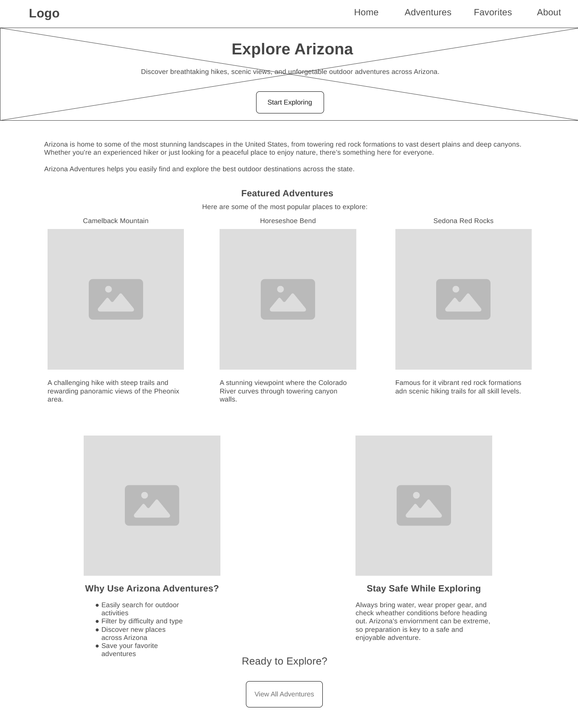
Adventures
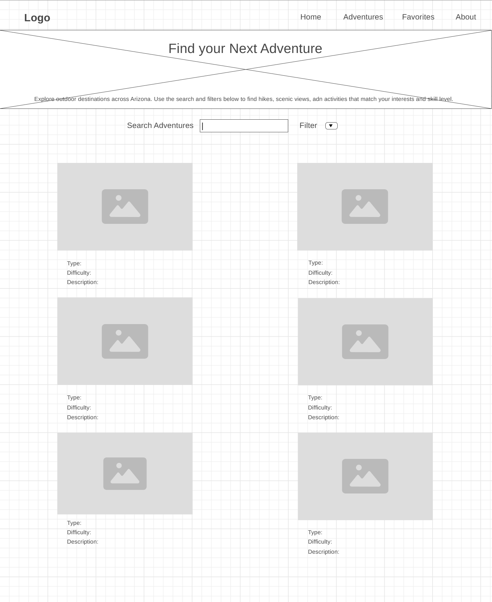
Favorites
When No Favorites Exist the page will display a simple message, "You haven't added any favorites yet."
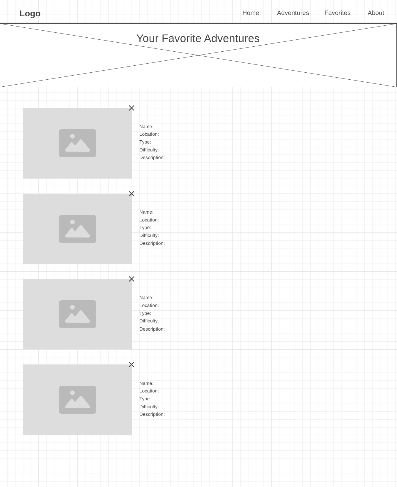
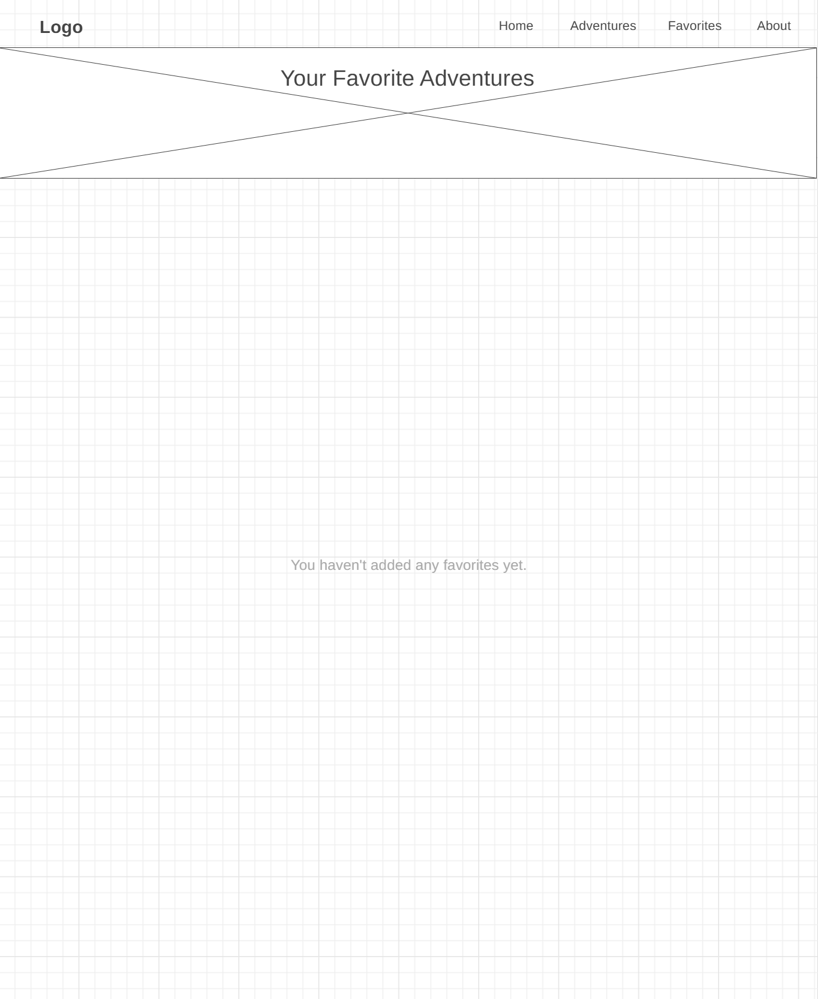
About
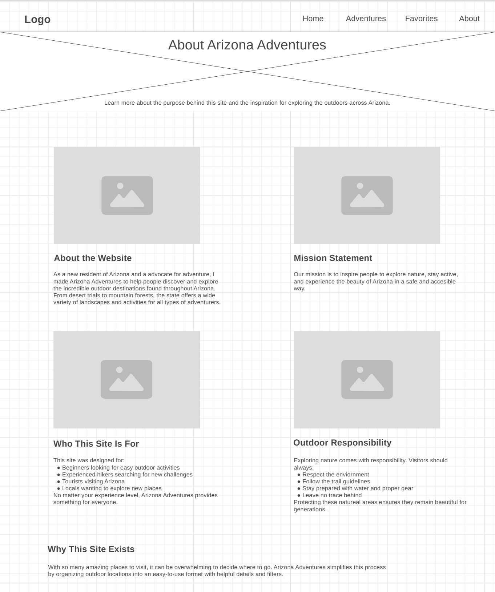